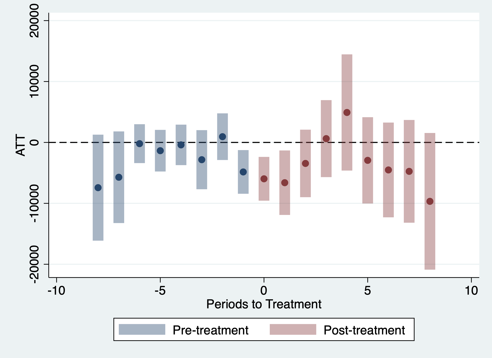
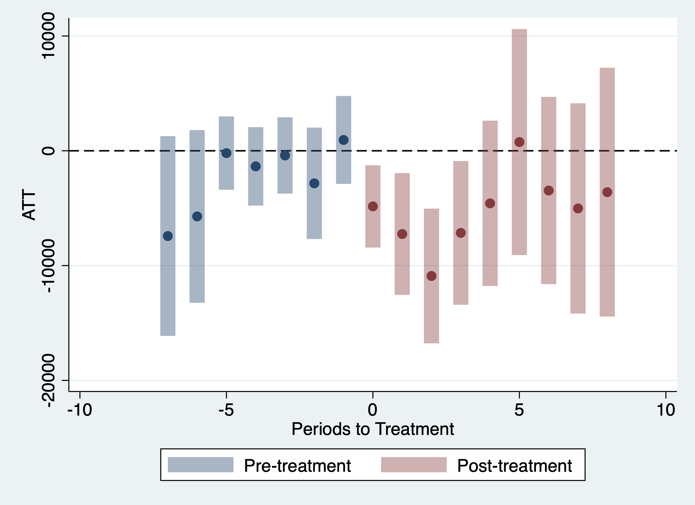
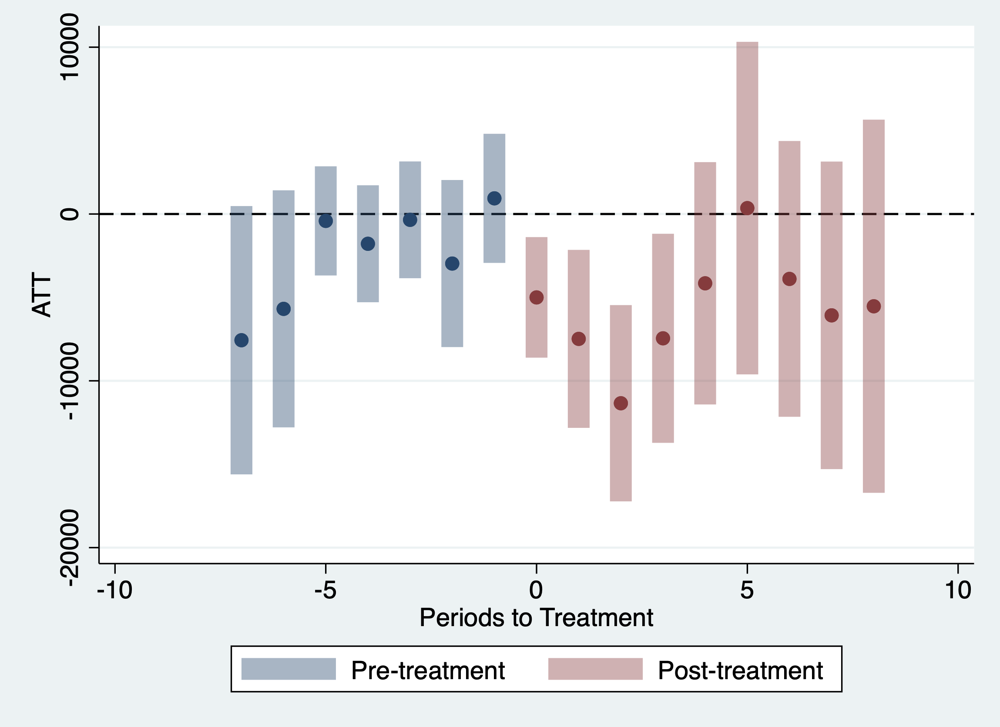
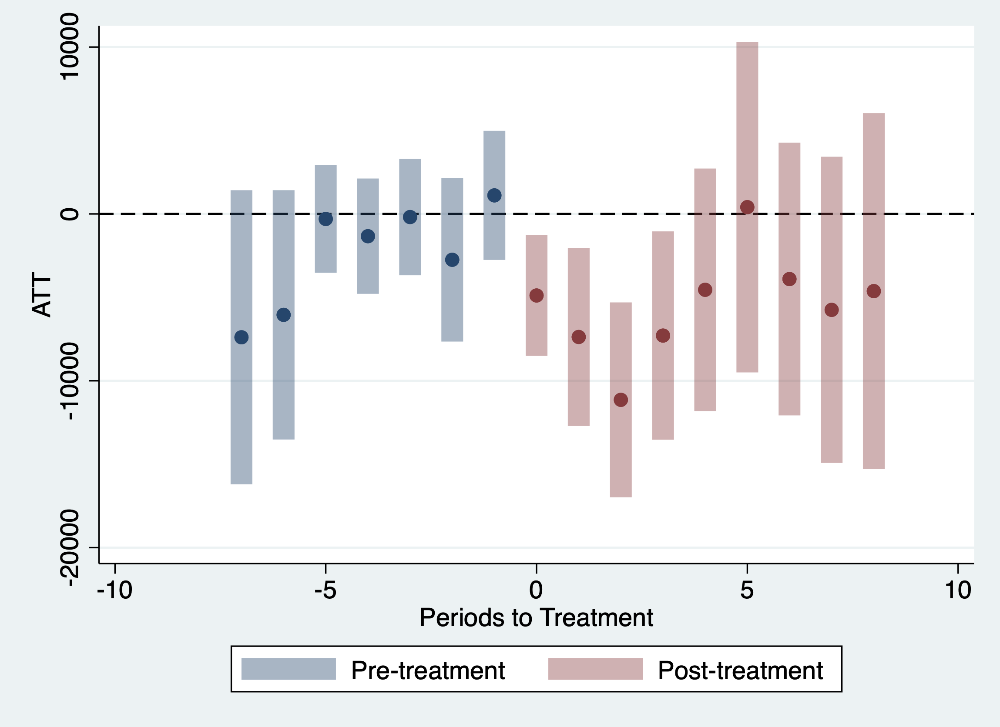

Exercise 1 Solutions
This exercise will involve estimating causal effect parameters using a difference-in-differences identification strategy that involves conditioning on covariates in the parallel trends assumption and possibly allows for anticipation effects.
In particular, we will use data from the National Longitudinal Study of Youth to learn about causal effects of job displacement (where job displacement roughly means “losing your job through no fault of your own” — a mass layoff is a main example).
To start with, load the data from the file job_displacement_data.RData by running
use "../job_displacement_data.dta", clearwhich will load a dataset called job_displacement_data. This is what the data looks like
list in 1/5 | id year group income female white occ_sc~e |
|-------------------------------------------------------------|
1. | 7900002 1984 0 31130 1 1 4 |
2. | 7900002 1985 0 32200 1 1 3 |
3. | 7900002 1986 0 35520 1 1 4 |
4. | 7900002 1987 0 43600 1 1 4 |
5. | 7900002 1988 0 39900 1 1 4 |
+-------------------------------------------------------------+You can see that the data contains the following columns:
id- an individual identifieryear- the year for this observationgroup- the year that person lost his/her job.group=0for those that do not lose a job in any period being considered.income- a person’s wage and salary income in this yearfemale- 1 for females, 0 for maleswhite- 1 for white, 0 for non-white
For the results below, we will mainly use the csdid package which you can install using ssc install csdid.
Question 1
We will start by computing group-time average treatment effects without including any covariates in the parallel trends assumption.
- Use the
didpackage to compute all available group-time average treatment effects.
Solutions:
csdid income, ivar(id) time(year) gvar(group)Units always treated found. These will be ignored
....x........x........x........x........xxxxx....x
x.......xx.......xx...
Difference-in-difference with Multiple Time Periods
Number of obs = 11,400
Outcome model : regression adjustment
Treatment model: none
------------------------------------------------------------------------------
| Coef. Std. Err. z P>|z| [95% Conf. Interval]
-------------+----------------------------------------------------------------
g1985 |
t_1984_1985 | -9455.758 3530.143 -2.68 0.007 -16374.71 -2536.805
t_1984_1986 | -14981.15 4299.966 -3.48 0.000 -23408.93 -6553.376
t_1984_1987 | -6129.213 4337.391 -1.41 0.158 -14630.34 2371.917
t_1984_1988 | -4815.918 4738.082 -1.02 0.309 -14102.39 4470.551
t_1984_1989 | 0 (omitted)
t_1984_1990 | -8011.917 5687.048 -1.41 0.159 -19158.33 3134.491
t_1984_1991 | -8164.492 5878.675 -1.39 0.165 -19686.48 3357.498
t_1984_1992 | -6325.888 5590.747 -1.13 0.258 -17283.55 4631.775
t_1984_1993 | -9669.584 5724.552 -1.69 0.091 -20889.5 1550.332
-------------+----------------------------------------------------------------
g1986 |
t_1984_1985 | -1801.937 2456.11 -0.73 0.463 -6615.824 3011.95
t_1985_1986 | -1919.447 3405.188 -0.56 0.573 -8593.493 4754.598
t_1985_1987 | -2596.819 4304.758 -0.60 0.546 -11033.99 5840.353
t_1985_1988 | -2081.753 6447.175 -0.32 0.747 -14717.98 10554.48
t_1985_1989 | 0 (omitted)
t_1985_1990 | -6064.094 6179.644 -0.98 0.326 -18175.97 6047.785
t_1985_1991 | -5903.964 6329.81 -0.93 0.351 -18310.16 6502.237
t_1985_1992 | -6804.483 6558.35 -1.04 0.299 -19658.61 6049.647
t_1985_1993 | -1801.576 6383.008 -0.28 0.778 -14312.04 10708.89
-------------+----------------------------------------------------------------
g1987 |
t_1984_1985 | 4518.574 4564.82 0.99 0.322 -4428.308 13465.46
t_1985_1986 | -8012.488 4349.707 -1.84 0.065 -16537.76 512.7802
t_1986_1987 | 7048.857 6144.013 1.15 0.251 -4993.188 19090.9
t_1986_1988 | 4489.467 6171.365 0.73 0.467 -7606.187 16585.12
t_1986_1989 | 0 (omitted)
t_1986_1990 | 8004.136 6887.031 1.16 0.245 -5494.197 21502.47
t_1986_1991 | 9475.066 6911.544 1.37 0.170 -4071.312 23021.44
t_1986_1992 | 8533.541 9383.704 0.91 0.363 -9858.181 26925.26
t_1986_1993 | 7881.393 7250.427 1.09 0.277 -6329.182 22091.97
-------------+----------------------------------------------------------------
g1988 |
t_1984_1985 | -8350.771 4329.706 -1.93 0.054 -16836.84 135.2963
t_1985_1986 | -3420.853 2964.689 -1.15 0.249 -9231.537 2389.831
t_1986_1987 | -3617.674 3483.742 -1.04 0.299 -10445.68 3210.334
t_1987_1988 | -1173.817 2850.037 -0.41 0.680 -6759.787 4412.153
t_1987_1989 | 0 (omitted)
t_1987_1990 | 280.6263 5519.59 0.05 0.959 -10537.57 11098.82
t_1987_1991 | 6099.727 4026.311 1.51 0.130 -1791.697 13991.15
t_1987_1992 | 13737.82 10419.28 1.32 0.187 -6683.587 34159.22
t_1987_1993 | 1688.782 7747.27 0.22 0.827 -13495.59 16873.15
-------------+----------------------------------------------------------------
g1990 |
t_1984_1985 | -5281.536 3137.971 -1.68 0.092 -11431.85 868.7732
t_1985_1986 | 3654.173 2446.867 1.49 0.135 -1141.598 8449.943
t_1986_1987 | 5934.895 2948.335 2.01 0.044 156.2642 11713.53
t_1987_1988 | 1034.199 3133.832 0.33 0.741 -5108 7176.398
t_1988_1989 | 0 (omitted)
t_1989_1990 | 0 (omitted)
t_1989_1991 | 0 (omitted)
t_1989_1992 | 0 (omitted)
t_1989_1993 | 0 (omitted)
-------------+----------------------------------------------------------------
g1991 |
t_1984_1985 | 891.2874 2765.972 0.32 0.747 -4529.918 6312.492
t_1985_1986 | -2816.636 3299.083 -0.85 0.393 -9282.719 3649.448
t_1986_1987 | -1340.055 2532.177 -0.53 0.597 -6303.03 3622.92
t_1987_1988 | -7025.039 3544.277 -1.98 0.047 -13971.69 -78.38372
t_1988_1989 | 0 (omitted)
t_1989_1990 | 0 (omitted)
t_1990_1991 | -12150.64 3997.579 -3.04 0.002 -19985.76 -4315.534
t_1990_1992 | 1433.998 4139.233 0.35 0.729 -6678.749 9546.745
t_1990_1993 | -2679.828 6842.388 -0.39 0.695 -16090.66 10731.01
-------------+----------------------------------------------------------------
g1992 |
t_1984_1985 | -12110.06 6253.041 -1.94 0.053 -24365.79 145.6789
t_1985_1986 | -3287.561 2324.793 -1.41 0.157 -7844.072 1268.951
t_1986_1987 | 2300.028 3450.526 0.67 0.505 -4462.878 9062.935
t_1987_1988 | -7273.935 2434.951 -2.99 0.003 -12046.35 -2501.517
t_1988_1989 | 0 (omitted)
t_1989_1990 | 0 (omitted)
t_1990_1991 | -10031.7 7303.289 -1.37 0.170 -24345.89 4282.481
t_1991_1992 | -8990.85 3612.76 -2.49 0.013 -16071.73 -1909.971
t_1991_1993 | -8662.612 12070.67 -0.72 0.473 -32320.69 14995.47
-------------+----------------------------------------------------------------
g1993 |
t_1984_1985 | -7424.664 4439.089 -1.67 0.094 -16125.12 1275.79
t_1985_1986 | 677.906 2503.711 0.27 0.787 -4229.277 5585.089
t_1986_1987 | 1424.138 2921.033 0.49 0.626 -4300.981 7149.258
t_1987_1988 | 4778.256 1527.433 3.13 0.002 1784.542 7771.969
t_1988_1989 | 0 (omitted)
t_1989_1990 | 0 (omitted)
t_1990_1991 | 3664.883 4980.086 0.74 0.462 -6095.907 13425.67
t_1991_1992 | -4108.917 4427.656 -0.93 0.353 -12786.96 4569.13
t_1992_1993 | -22828.36 5126.199 -4.45 0.000 -32875.53 -12781.2
------------------------------------------------------------------------------
Control: Never Treated
See Callaway and Sant'Anna (2021) for details- Bonus Question Try to manually calculate \(ATT(g=1992, t=1992)\). Can you calculate exactly the same number as in part (a)?
Solutions:
quietly sum income if group == 1992 & year == 1992
local y_11 = `r(mean)'
quietly sum income if group == 1992 & year == 1991
local y_10 = `r(mean)'
quietly sum income if group == 0 & year == 1992
local y_01 = `r(mean)'
quietly sum income if group == 0 & year == 1991
local y_00 = `r(mean)'
local did = (`y_11' - `y_10') - (`y_01' - `y_00')
disp "DID Estimate: `did'"DID Estimate: -8990.850446338249- Aggregate the group-time average treatment effects into an event study and plot the results. What do you notice? Is there evidence against parallel trends?
Solutions:
csdid income, ivar(id) time(year) gvar(group) agg(event)
csdid_plotUnits always treated found. These will be ignored
....x........x........x........x........xxxxx....x
x.......xx.......xx...
Difference-in-difference with Multiple Time Periods
Number of obs = 11,400
Outcome model : regression adjustment
Treatment model: none
------------------------------------------------------------------------------
| Coef. Std. Err. z P>|z| [95% Conf. Interval]
-------------+----------------------------------------------------------------
Pre_avg | -2730.008 1048.027 -2.60 0.009 -4784.103 -675.9126
Post_avg | -3595.643 2811.038 -1.28 0.201 -9105.176 1913.89
Tm8 | -7424.664 4439.089 -1.67 0.094 -16125.12 1275.79
Tm7 | -5716.076 3838.157 -1.49 0.136 -13238.72 1806.573
Tm6 | -202.5117 1629.01 -0.12 0.901 -3395.313 2990.289
Tm5 | -1357.557 1743.251 -0.78 0.436 -4774.267 2059.153
Tm4 | -404.3836 1695.983 -0.24 0.812 -3728.449 2919.682
Tm3 | -2834.594 2475.856 -1.14 0.252 -7687.181 2017.994
Tm2 | 943.6407 1953.637 0.48 0.629 -2885.417 4772.698
Tm1 | -4843.92 1829.255 -2.65 0.008 -8429.194 -1258.646
Tp0 | -5970.064 1834.463 -3.25 0.001 -9565.546 -2374.582
Tp1 | -6610.944 2700.649 -2.45 0.014 -11904.12 -1317.769
Tp2 | -3447.418 2827.528 -1.22 0.223 -8989.271 2094.435
Tp3 | 624.9279 3225.022 0.19 0.846 -5695.999 6945.855
Tp4 | 4919.383 4866.129 1.01 0.312 -4618.055 14456.82
Tp5 | -2941.344 3614.3 -0.81 0.416 -10025.24 4142.554
Tp6 | -4518.106 3968.625 -1.14 0.255 -12296.47 3260.255
Tp7 | -4747.639 4302.736 -1.10 0.270 -13180.85 3685.568
Tp8 | -9669.584 5724.552 -1.69 0.091 -20889.5 1550.332
------------------------------------------------------------------------------
Control: Never Treated
See Callaway and Sant'Anna (2021) for details
- Aggregate the group-time average treatment effects into a single overall treatment effect. How do you interpret the results?
Solutions:
csdid income, ivar(id) time(year) gvar(group) agg(group)Units always treated found. These will be ignored
....x........x........x........x........xxxxx....x
x.......xx.......xx...
Difference-in-difference with Multiple Time Periods
Number of obs = 11,400
Outcome model : regression adjustment
Treatment model: none
------------------------------------------------------------------------------
| Coef. Std. Err. z P>|z| [95% Conf. Interval]
-------------+----------------------------------------------------------------
GAverage | -4406.669 2143.766 -2.06 0.040 -8608.374 -204.9649
G1985 | -8444.241 4535.853 -1.86 0.063 -17334.35 445.8679
G1986 | -3881.734 5257.768 -0.74 0.460 -14186.77 6423.302
G1987 | 7572.077 6130.068 1.24 0.217 -4442.637 19586.79
G1988 | 4126.627 4583.124 0.90 0.368 -4856.131 13109.39
G1991 | -4465.492 4514.597 -0.99 0.323 -13313.94 4382.956
G1992 | -8826.731 6562.055 -1.35 0.179 -21688.12 4034.661
G1993 | -22828.36 5126.199 -4.45 0.000 -32875.53 -12781.2
------------------------------------------------------------------------------
Control: Never Treated
See Callaway and Sant'Anna (2021) for detailsQuestion 2
A major issue in the job displacement literature concerns a version of anticipation. In particular, there is some empirical evidence that earnings of displaced workers start to decline before they are actually displaced (a rough explanation is that firms where there are mass layoffs typically “struggle” in the time period before the mass layoff actually takes place and this can lead to slower income growth for workers at those firms).
- Is there evidence of anticipation in your results from Question 1?
Solutions:
There is a moderate amount of evidence for anticipation in the previous results. It hinges on the estimate for event-time equal to -1. It is negative which is in line with the discussion about anticipation above, but it is only marginally statistically significant.
- Repeat parts (a)-(d) of Question 1 allowing for one year of anticipation.
Solutions:
* Move up "treatment date" by 1 year
gen group_m1 = group
replace group_m1 = group_m1 - 1 if group != 0(1,125 real changes made)* part a
csdid income, ivar(id) time(year) gvar(group_m1)Units always treated found. These will be ignored
....x........x........x........x........xxxxx....x
x.......xx...
Difference-in-difference with Multiple Time Periods
Number of obs = 11,164
Outcome model : regression adjustment
Treatment model: none
------------------------------------------------------------------------------
| Coef. Std. Err. z P>|z| [95% Conf. Interval]
-------------+----------------------------------------------------------------
g1985 |
t_1984_1985 | -1801.937 2456.11 -0.73 0.463 -6615.824 3011.95
t_1984_1986 | -3721.385 3344.837 -1.11 0.266 -10277.15 2834.376
t_1984_1987 | -4398.756 3453.298 -1.27 0.203 -11167.1 2369.583
t_1984_1988 | -3883.691 5544.658 -0.70 0.484 -14751.02 6983.64
t_1984_1989 | 0 (omitted)
t_1984_1990 | -7866.031 5527.045 -1.42 0.155 -18698.84 2966.778
t_1984_1991 | -7705.901 5713.436 -1.35 0.177 -18904.03 3492.228
t_1984_1992 | -8606.421 6086.643 -1.41 0.157 -20536.02 3323.181
t_1984_1993 | -3603.513 5529.124 -0.65 0.515 -14440.4 7233.371
-------------+----------------------------------------------------------------
g1986 |
t_1984_1985 | 4518.574 4564.82 0.99 0.322 -4428.308 13465.46
t_1985_1986 | -8012.488 4349.707 -1.84 0.065 -16537.76 512.7802
t_1985_1987 | -963.6314 6479.146 -0.15 0.882 -13662.52 11735.26
t_1985_1988 | -3523.021 7396.681 -0.48 0.634 -18020.25 10974.21
t_1985_1989 | 0 (omitted)
t_1985_1990 | -8.351815 6222.58 -0.00 0.999 -12204.38 12187.68
t_1985_1991 | 1462.578 6809.271 0.21 0.830 -11883.35 14808.5
t_1985_1992 | 521.0534 8752.718 0.06 0.953 -16633.96 17676.07
t_1985_1993 | -131.0948 6942.23 -0.02 0.985 -13737.62 13475.43
-------------+----------------------------------------------------------------
g1987 |
t_1984_1985 | -8350.771 4329.706 -1.93 0.054 -16836.84 135.2963
t_1985_1986 | -3420.853 2964.689 -1.15 0.249 -9231.537 2389.831
t_1986_1987 | -3617.674 3483.742 -1.04 0.299 -10445.68 3210.334
t_1986_1988 | -4791.491 4153.77 -1.15 0.249 -12932.73 3349.749
t_1986_1989 | 0 (omitted)
t_1986_1990 | -3337.048 6051.583 -0.55 0.581 -15197.93 8523.837
t_1986_1991 | 2482.053 5357.229 0.46 0.643 -8017.922 12982.03
t_1986_1992 | 10120.14 11738.47 0.86 0.389 -12886.84 33127.13
t_1986_1993 | -1928.892 7250.619 -0.27 0.790 -16139.85 12282.06
-------------+----------------------------------------------------------------
g1989 |
t_1984_1985 | -5281.536 3137.971 -1.68 0.092 -11431.85 868.7732
t_1985_1986 | 3654.173 2446.867 1.49 0.135 -1141.598 8449.943
t_1986_1987 | 5934.895 2948.335 2.01 0.044 156.2642 11713.53
t_1987_1988 | 1034.199 3133.832 0.33 0.741 -5108 7176.398
t_1988_1989 | 0 (omitted)
t_1988_1990 | -4343.949 9169.925 -0.47 0.636 -22316.67 13628.77
t_1988_1991 | -21910.21 4407.569 -4.97 0.000 -30548.89 -13271.53
t_1988_1992 | -15365.93 3710.792 -4.14 0.000 -22638.95 -8092.909
t_1988_1993 | -16411.11 6044.992 -2.71 0.007 -28259.07 -4563.139
-------------+----------------------------------------------------------------
g1990 |
t_1984_1985 | 891.2874 2765.972 0.32 0.747 -4529.918 6312.492
t_1985_1986 | -2816.636 3299.083 -0.85 0.393 -9282.719 3649.448
t_1986_1987 | -1340.055 2532.177 -0.53 0.597 -6303.03 3622.92
t_1987_1988 | -7025.039 3544.277 -1.98 0.047 -13971.69 -78.38372
t_1988_1989 | 0 (omitted)
t_1989_1990 | 0 (omitted)
t_1989_1991 | 0 (omitted)
t_1989_1992 | 0 (omitted)
t_1989_1993 | 0 (omitted)
-------------+----------------------------------------------------------------
g1991 |
t_1984_1985 | -12110.06 6253.041 -1.94 0.053 -24365.79 145.6789
t_1985_1986 | -3287.561 2324.793 -1.41 0.157 -7844.072 1268.951
t_1986_1987 | 2300.028 3450.526 0.67 0.505 -4462.878 9062.935
t_1987_1988 | -7273.935 2434.951 -2.99 0.003 -12046.35 -2501.517
t_1988_1989 | 0 (omitted)
t_1989_1990 | 0 (omitted)
t_1990_1991 | -10031.7 7303.289 -1.37 0.170 -24345.89 4282.481
t_1990_1992 | -19022.55 6414.226 -2.97 0.003 -31594.2 -6450.902
t_1990_1993 | -18694.31 7778.507 -2.40 0.016 -33939.91 -3448.721
-------------+----------------------------------------------------------------
g1992 |
t_1984_1985 | -7424.664 4439.089 -1.67 0.094 -16125.12 1275.79
t_1985_1986 | 677.906 2503.711 0.27 0.787 -4229.277 5585.089
t_1986_1987 | 1424.138 2921.033 0.49 0.626 -4300.981 7149.258
t_1987_1988 | 4778.256 1527.433 3.13 0.002 1784.542 7771.969
t_1988_1989 | 0 (omitted)
t_1989_1990 | 0 (omitted)
t_1990_1991 | 3664.883 4980.086 0.74 0.462 -6095.907 13425.67
t_1991_1992 | -4108.917 4427.656 -0.93 0.353 -12786.96 4569.13
t_1991_1993 | -26937.28 5505.881 -4.89 0.000 -37728.61 -16145.95
------------------------------------------------------------------------------
Control: Never Treated
See Callaway and Sant'Anna (2021) for details* part b
quietly sum income if group == 1992 & year == 1992
local y_11 = `r(mean)'
quietly sum income if group == 1992 & year == 1990
local y_10 = `r(mean)'
quietly sum income if group == 0 & year == 1992
local y_01 = `r(mean)'
quietly sum income if group == 0 & year == 1990
local y_00 = `r(mean)'
local did = (`y_11' - `y_10') - (`y_01' - `y_00')
disp "DID Estimate: `did'"DID Estimate: -19022.55321626245* part c
csdid income, ivar(id) time(year) gvar(group_m1) agg(event)
csdid_plotUnits always treated found. These will be ignored
....x........x........x........x........xxxxx....x
x.......xx...
Difference-in-difference with Multiple Time Periods
Number of obs = 11,164
Outcome model : regression adjustment
Treatment model: none
------------------------------------------------------------------------------
| Coef. Std. Err. z P>|z| [95% Conf. Interval]
-------------+----------------------------------------------------------------
Pre_avg | -2428.021 1129.103 -2.15 0.032 -4641.022 -215.0193
Post_avg | -5116.378 2522.756 -2.03 0.043 -10060.89 -171.8674
Tm7 | -7424.664 4439.089 -1.67 0.094 -16125.12 1275.79
Tm6 | -5716.076 3838.157 -1.49 0.136 -13238.72 1806.573
Tm5 | -202.5117 1629.01 -0.12 0.901 -3395.313 2990.289
Tm4 | -1357.557 1743.251 -0.78 0.436 -4774.267 2059.153
Tm3 | -404.3836 1695.983 -0.24 0.812 -3728.449 2919.682
Tm2 | -2834.594 2475.856 -1.14 0.252 -7687.181 2017.994
Tm1 | 943.6407 1953.637 0.48 0.629 -2885.417 4772.698
Tp0 | -4843.92 1829.255 -2.65 0.008 -8429.194 -1258.646
Tp1 | -7247.563 2707.316 -2.68 0.007 -12553.81 -1941.32
Tp2 | -10905.07 2995.137 -3.64 0.000 -16775.43 -5034.707
Tp3 | -7150.703 3193.771 -2.24 0.025 -13410.38 -891.0268
Tp4 | -4576.623 3674.477 -1.25 0.213 -11778.47 2625.219
Tp5 | 760.506 5021.692 0.15 0.880 -9081.83 10602.84
Tp6 | -3459.808 4160.34 -0.83 0.406 -11613.92 4694.307
Tp7 | -5020.706 4673.388 -1.07 0.283 -14180.38 4138.967
Tp8 | -3603.513 5529.124 -0.65 0.515 -14440.4 7233.371
------------------------------------------------------------------------------
Control: Never Treated
See Callaway and Sant'Anna (2021) for details
* part d
csdid income, ivar(id) time(year) gvar(group_m1) agg(group)Units always treated found. These will be ignored
....x........x........x........x........xxxxx....x
x.......xx...
Difference-in-difference with Multiple Time Periods
Number of obs = 11,164
Outcome model : regression adjustment
Treatment model: none
------------------------------------------------------------------------------
| Coef. Std. Err. z P>|z| [95% Conf. Interval]
-------------+----------------------------------------------------------------
GAverage | -7298.004 1967.793 -3.71 0.000 -11154.81 -3441.201
G1985 | -5198.454 3973.626 -1.31 0.191 -12986.62 2589.709
G1986 | -1522.137 5439.282 -0.28 0.780 -12182.93 9138.66
G1987 | -178.8183 4986.896 -0.04 0.971 -9952.954 9595.317
G1989 | -14507.8 4121.479 -3.52 0.000 -22585.75 -6429.847
G1991 | -15916.19 4228.73 -3.76 0.000 -24204.35 -7628.033
G1992 | -15523.1 4288.351 -3.62 0.000 -23928.11 -7118.085
------------------------------------------------------------------------------
Control: Never Treated
See Callaway and Sant'Anna (2021) for detailsQuestion 3
Now, let’s suppose that we think that parallel trends holds only after we condition on a person sex and race (in reality, you could think of including many other variables in the parallel trends assumption, but let’s just keep it simple). In my view, I think allowing for anticipation is desirable in this setting too, so let’s keep allowing for one year of anticipation.
- Answer parts (a), (c), and (d) of Question 1 but including
sexandwhiteas covariates.
Solutions:
* part a
csdid income i.female i.white, ivar(id) time(year) gvar(group_m1)Units always treated found. These will be ignored
....x........x........x........x........xxxxx....x
x.......xx...
Difference-in-difference with Multiple Time Periods
Number of obs = 11,164
Outcome model : least squares
Treatment model: inverse probability
------------------------------------------------------------------------------
| Coef. Std. Err. z P>|z| [95% Conf. Interval]
-------------+----------------------------------------------------------------
g1985 |
t_1984_1985 | -1724.003 2458.934 -0.70 0.483 -6543.425 3095.418
t_1984_1986 | -4258.867 3329.635 -1.28 0.201 -10784.83 2267.097
t_1984_1987 | -4861.614 3475.476 -1.40 0.162 -11673.42 1950.195
t_1984_1988 | -4729.612 5484.551 -0.86 0.388 -15479.14 6019.911
t_1984_1989 | 0 (omitted)
t_1984_1990 | -8685.99 5550.638 -1.56 0.118 -19565.04 2193.06
t_1984_1991 | -8753.855 5698.922 -1.54 0.125 -19923.54 2415.826
t_1984_1992 | -9530.395 6046.17 -1.58 0.115 -21380.67 2319.881
t_1984_1993 | -4727.765 5426.184 -0.87 0.384 -15362.89 5907.361
-------------+----------------------------------------------------------------
g1986 |
t_1984_1985 | 4559.705 4596.627 0.99 0.321 -4449.519 13568.93
t_1985_1986 | -8337.68 4317.782 -1.93 0.053 -16800.38 125.0165
t_1985_1987 | -1244.485 6506.007 -0.19 0.848 -13996.02 11507.05
t_1985_1988 | -4009.114 7416.923 -0.54 0.589 -18546.02 10527.79
t_1985_1989 | 0 (omitted)
t_1985_1990 | -483.2506 6321.764 -0.08 0.939 -12873.68 11907.18
t_1985_1991 | 865.8558 6863.468 0.13 0.900 -12586.29 14318.01
t_1985_1992 | -1.136882 8750.712 -0.00 1.000 -17152.22 17149.94
t_1985_1993 | -760.5834 6996.293 -0.11 0.913 -14473.06 12951.9
-------------+----------------------------------------------------------------
g1987 |
t_1984_1985 | -8427.959 4344.236 -1.94 0.052 -16942.51 86.58735
t_1985_1986 | -3208.663 2967.399 -1.08 0.280 -9024.659 2607.332
t_1986_1987 | -3540.335 3532.861 -1.00 0.316 -10464.61 3383.945
t_1986_1988 | -4496.718 4192.765 -1.07 0.283 -12714.39 3720.951
t_1986_1989 | 0 (omitted)
t_1986_1990 | -2886.271 6080.348 -0.47 0.635 -14803.53 9030.992
t_1986_1991 | 3026.129 5380.889 0.56 0.574 -7520.219 13572.48
t_1986_1992 | 10422.75 11781.13 0.88 0.376 -12667.85 33513.35
t_1986_1993 | -1710.323 7296.294 -0.23 0.815 -16010.8 12590.15
-------------+----------------------------------------------------------------
g1989 |
t_1984_1985 | -5423.422 3167.925 -1.71 0.087 -11632.44 785.597
t_1985_1986 | 4124.357 2580.371 1.60 0.110 -933.078 9181.792
t_1986_1987 | 6034.51 2986.352 2.02 0.043 181.3663 11887.65
t_1987_1988 | 1473.845 3224.853 0.46 0.648 -4846.751 7794.441
t_1988_1989 | 0 (omitted)
t_1988_1990 | -4087.09 9194.5 -0.44 0.657 -22107.98 13933.8
t_1988_1991 | -21451.71 4426.529 -4.85 0.000 -30127.55 -12775.87
t_1988_1992 | -15350.47 3712.715 -4.13 0.000 -22627.26 -8073.681
t_1988_1993 | -16489.87 6082.825 -2.71 0.007 -28411.98 -4567.748
-------------+----------------------------------------------------------------
g1990 |
t_1984_1985 | 787.4357 2762.92 0.29 0.776 -4627.788 6202.659
t_1985_1986 | -2463.712 3387.522 -0.73 0.467 -9103.133 4175.708
t_1986_1987 | -1271.944 2604.541 -0.49 0.625 -6376.751 3832.863
t_1987_1988 | -6698.783 3730.878 -1.80 0.073 -14011.17 613.6032
t_1988_1989 | 0 (omitted)
t_1989_1990 | 0 (omitted)
t_1989_1991 | 0 (omitted)
t_1989_1992 | 0 (omitted)
t_1989_1993 | 0 (omitted)
-------------+----------------------------------------------------------------
g1991 |
t_1984_1985 | -12170.12 6178.935 -1.97 0.049 -24280.61 -59.62972
t_1985_1986 | -3584.494 2342.734 -1.53 0.126 -8176.168 1007.18
t_1986_1987 | 2598.525 3439.103 0.76 0.450 -4141.994 9339.043
t_1987_1988 | -7330.915 2607.234 -2.81 0.005 -12441 -2220.83
t_1988_1989 | 0 (omitted)
t_1989_1990 | 0 (omitted)
t_1990_1991 | -10130.91 7396.362 -1.37 0.171 -24627.52 4365.689
t_1990_1992 | -19327.8 6455.656 -2.99 0.003 -31980.65 -6674.944
t_1990_1993 | -19410.44 7667.027 -2.53 0.011 -34437.54 -4383.345
-------------+----------------------------------------------------------------
g1992 |
t_1984_1985 | -7391.929 4506.159 -1.64 0.101 -16223.84 1439.981
t_1985_1986 | 50.76363 2681.48 0.02 0.985 -5204.841 5306.368
t_1986_1987 | 1618.304 2902.035 0.56 0.577 -4069.581 7306.189
t_1987_1988 | 4453.454 1642.082 2.71 0.007 1235.032 7671.877
t_1988_1989 | 0 (omitted)
t_1989_1990 | 0 (omitted)
t_1990_1991 | 3439.787 5033.438 0.68 0.494 -6425.57 13305.14
t_1991_1992 | -4123.758 4592.035 -0.90 0.369 -13123.98 4876.466
t_1991_1993 | -27304.41 5673.621 -4.81 0.000 -38424.5 -16184.32
------------------------------------------------------------------------------
Control: Never Treated
See Callaway and Sant'Anna (2021) for details* part c
csdid income i.female i.white, ivar(id) time(year) gvar(group_m1) agg(event)
csdid_plotUnits always treated found. These will be ignored
....x........x........x........x........xxxxx....x
x.......xx...
Difference-in-difference with Multiple Time Periods
Number of obs = 11,164
Outcome model : least squares
Treatment model: inverse probability
------------------------------------------------------------------------------
| Coef. Std. Err. z P>|z| [95% Conf. Interval]
-------------+----------------------------------------------------------------
Pre_avg | -2409.952 1129.233 -2.13 0.033 -4623.208 -196.6955
Post_avg | -5488.493 2523.002 -2.18 0.030 -10433.49 -543.5007
Tm7 | -7391.929 4506.159 -1.64 0.101 -16223.84 1439.981
Tm6 | -6059.679 3798.62 -1.60 0.111 -13504.84 1385.48
Tm5 | -274.8826 1629.93 -0.17 0.866 -3469.487 2919.722
Tm4 | -1327.465 1760.053 -0.75 0.451 -4777.105 2122.174
Tm3 | -179.5675 1777.944 -0.10 0.920 -3664.273 3305.138
Tm2 | -2749.685 2504.009 -1.10 0.272 -7657.453 2158.082
Tm1 | 1113.547 1970.672 0.57 0.572 -2748.899 4975.994
Tp0 | -4884.842 1846.201 -2.65 0.008 -8503.329 -1266.354
Tp1 | -7378.857 2720.712 -2.71 0.007 -12711.35 -2046.36
Tp2 | -11156.99 2979.612 -3.74 0.000 -16996.92 -5317.058
Tp3 | -7316.783 3181.754 -2.30 0.021 -13552.91 -1080.66
Tp4 | -4551.513 3709.318 -1.23 0.220 -11821.64 2718.616
Tp5 | 377.7002 5063.744 0.07 0.941 -9547.056 10302.46
Tp6 | -3937.296 4177.605 -0.94 0.346 -12125.25 4250.659
Tp7 | -5820.09 4683.423 -1.24 0.214 -14999.43 3359.25
Tp8 | -4727.765 5426.184 -0.87 0.384 -15362.89 5907.361
------------------------------------------------------------------------------
Control: Never Treated
See Callaway and Sant'Anna (2021) for details
* part d
csdid income i.female i.white, ivar(id) time(year) gvar(group_,1) agg(group)gvar() does not contain a valid varname
r(198);
end of do-file
r(198);- By default, the
didpackage uses the doubly robust approach that we discussed during our session. How do the results change if you use a regression approach or propensity score re-weighting?
Solutions:
For simplicity, I am just going to show the overall results when using the regression approach and the propensity score re-weighting approach.
* part a
csdid income i.female i.white, ivar(id) time(year) gvar(group_m1) method(reg)Units always treated found. These will be ignored
....x........x........x........x........xxxxx....x
x.......xx...
Difference-in-difference with Multiple Time Periods
Number of obs = 11,164
Outcome model : regression adjustment
Treatment model: none
------------------------------------------------------------------------------
| Coef. Std. Err. z P>|z| [95% Conf. Interval]
-------------+----------------------------------------------------------------
g1985 |
t_1984_1985 | -1731.595 2458.97 -0.70 0.481 -6551.087 3087.897
t_1984_1986 | -4223.039 3336.126 -1.27 0.206 -10761.73 2315.649
t_1984_1987 | -4807.033 3469.401 -1.39 0.166 -11606.94 1992.868
t_1984_1988 | -4656.409 5490.373 -0.85 0.396 -15417.34 6104.525
t_1984_1989 | 0 (omitted)
t_1984_1990 | -8618.812 5546.257 -1.55 0.120 -19489.27 2251.652
t_1984_1991 | -8675.577 5697.411 -1.52 0.128 -19842.3 2491.142
t_1984_1992 | -9431.255 6055.712 -1.56 0.119 -21300.23 2437.724
t_1984_1993 | -4626.267 5442.481 -0.85 0.395 -15293.33 6040.8
-------------+----------------------------------------------------------------
g1986 |
t_1984_1985 | 4557.422 4594.569 0.99 0.321 -4447.768 13562.61
t_1985_1986 | -8324.622 4315.666 -1.93 0.054 -16783.17 133.9279
t_1985_1987 | -1225.788 6500.99 -0.19 0.850 -13967.49 11515.92
t_1985_1988 | -3984.817 7409.26 -0.54 0.591 -18506.7 10537.07
t_1985_1989 | 0 (omitted)
t_1985_1990 | -460.7647 6311.823 -0.07 0.942 -12831.71 11910.18
t_1985_1991 | 891.6797 6855.723 0.13 0.897 -12545.29 14328.65
t_1985_1992 | 30.96108 8742.63 0.00 0.997 -17104.28 17166.2
t_1985_1993 | -727.7764 6980.71 -0.10 0.917 -14409.72 12954.16
-------------+----------------------------------------------------------------
g1987 |
t_1984_1985 | -8426.549 4341.95 -1.94 0.052 -16936.61 83.51623
t_1985_1986 | -3216.731 2983.078 -1.08 0.281 -9063.457 2629.995
t_1986_1987 | -3543.819 3523.884 -1.01 0.315 -10450.5 3362.867
t_1986_1988 | -4503.662 4176.624 -1.08 0.281 -12689.69 3682.37
t_1986_1989 | 0 (omitted)
t_1986_1990 | -2892.095 6072.574 -0.48 0.634 -14794.12 9009.931
t_1986_1991 | 3018.242 5364.143 0.56 0.574 -7495.286 13531.77
t_1986_1992 | 10410.99 11755.85 0.89 0.376 -12630.06 33452.03
t_1986_1993 | -1722.525 7275.433 -0.24 0.813 -15982.11 12537.06
-------------+----------------------------------------------------------------
g1989 |
t_1984_1985 | -5423.935 3175.234 -1.71 0.088 -11647.28 799.4096
t_1985_1986 | 4127.288 2600.393 1.59 0.112 -969.3893 9223.965
t_1986_1987 | 6035.775 2972.772 2.03 0.042 209.2485 11862.3
t_1987_1988 | 1475.102 3240.398 0.46 0.649 -4875.961 7826.165
t_1988_1989 | 0 (omitted)
t_1988_1990 | -4087.497 9195.523 -0.44 0.657 -22110.39 13935.4
t_1988_1991 | -21451.37 4427.528 -4.84 0.000 -30129.16 -12773.57
t_1988_1992 | -15348.72 3740.808 -4.10 0.000 -22680.57 -8016.868
t_1988_1993 | -16487.96 6101.742 -2.70 0.007 -28447.15 -4528.76
-------------+----------------------------------------------------------------
g1990 |
t_1984_1985 | 786.6699 2758.66 0.29 0.776 -4620.205 6193.545
t_1985_1986 | -2459.333 3400.778 -0.72 0.470 -9124.735 4206.07
t_1986_1987 | -1270.053 2587.731 -0.49 0.624 -6341.912 3801.807
t_1987_1988 | -6696.904 3730.782 -1.80 0.073 -14009.1 615.2933
t_1988_1989 | 0 (omitted)
t_1989_1990 | 0 (omitted)
t_1989_1991 | 0 (omitted)
t_1989_1992 | 0 (omitted)
t_1989_1993 | 0 (omitted)
-------------+----------------------------------------------------------------
g1991 |
t_1984_1985 | -12153.64 6196.088 -1.96 0.050 -24297.75 -9.529399
t_1985_1986 | -3678.766 2417.222 -1.52 0.128 -8416.435 1058.902
t_1986_1987 | 2557.812 3438.055 0.74 0.457 -4180.652 9296.276
t_1987_1988 | -7371.348 2582.541 -2.85 0.004 -12433.04 -2309.66
t_1988_1989 | 0 (omitted)
t_1989_1990 | 0 (omitted)
t_1990_1991 | -10155.01 7386.076 -1.37 0.169 -24631.46 4321.43
t_1990_1992 | -19397.19 6456.32 -3.00 0.003 -32051.35 -6743.037
t_1990_1993 | -19484.96 7660.212 -2.54 0.011 -34498.69 -4471.217
-------------+----------------------------------------------------------------
g1992 |
t_1984_1985 | -7392.683 4496.647 -1.64 0.100 -16205.95 1420.583
t_1985_1986 | 55.07588 2720.682 0.02 0.984 -5277.363 5387.515
t_1986_1987 | 1620.166 2926.908 0.55 0.580 -4116.469 7356.802
t_1987_1988 | 4455.304 1639.589 2.72 0.007 1241.769 7668.839
t_1988_1989 | 0 (omitted)
t_1989_1990 | 0 (omitted)
t_1990_1991 | 3440.89 5020.864 0.69 0.493 -6399.823 13281.6
t_1991_1992 | -4121.686 4628.339 -0.89 0.373 -13193.06 4949.692
t_1991_1993 | -27302.1 5691.967 -4.80 0.000 -38458.15 -16146.05
------------------------------------------------------------------------------
Control: Never Treated
See Callaway and Sant'Anna (2021) for details* part c
csdid income i.female i.white, ivar(id) time(year) gvar(group_m1) agg(event) method(reg)
csdid_plotUnits always treated found. These will be ignored
....x........x........x........x........xxxxx....x
x.......xx...
Difference-in-difference with Multiple Time Periods
Number of obs = 11,164
Outcome model : regression adjustment
Treatment model: none
------------------------------------------------------------------------------
| Coef. Std. Err. z P>|z| [95% Conf. Interval]
-------------+----------------------------------------------------------------
Pre_avg | -2414.705 1130.956 -2.14 0.033 -4631.338 -198.0717
Post_avg | -5457.024 2521.645 -2.16 0.030 -10399.36 -514.6912
Tm7 | -7392.683 4496.647 -1.64 0.100 -16205.95 1420.583
Tm6 | -6049.281 3811.814 -1.59 0.113 -13520.3 1421.736
Tm5 | -302.912 1645.723 -0.18 0.854 -3528.469 2922.646
Tm4 | -1333.849 1763.177 -0.76 0.449 -4789.612 2121.913
Tm3 | -186.9635 1781.588 -0.10 0.916 -3678.811 3304.884
Tm2 | -2748.214 2501.22 -1.10 0.272 -7650.516 2154.088
Tm1 | 1110.969 1974.156 0.56 0.574 -2758.306 4980.244
Tp0 | -4887.737 1845.509 -2.65 0.008 -8504.869 -1270.606
Tp1 | -7374.962 2720.81 -2.71 0.007 -12707.65 -2042.273
Tp2 | -11142.38 2979.227 -3.74 0.000 -16981.56 -5303.199
Tp3 | -7290.7 3185.067 -2.29 0.022 -13533.32 -1048.083
Tp4 | -4546.854 3708.065 -1.23 0.220 -11814.53 2720.821
Tp5 | 406.9005 5054.224 0.08 0.936 -9499.196 10313
Tp6 | -3902.203 4171.008 -0.94 0.350 -12077.23 4272.822
Tp7 | -5749.014 4681.705 -1.23 0.219 -14924.99 3426.96
Tp8 | -4626.267 5442.481 -0.85 0.395 -15293.33 6040.8
------------------------------------------------------------------------------
Control: Never Treated
See Callaway and Sant'Anna (2021) for details
* part d
csdid income i.female i.white, ivar(id) time(year) gvar(group_,1) agg(group) method(reg)gvar() does not contain a valid varname
r(198);
end of do-file
r(198);You can see that the results are very similar across estimation strategies in this example.
Question 4
Finally, the data that we have contains a variable called occ_score which is roughly a variable that measures the occupation “quality”. Suppose that we (i) are interested in including a person’s occupation in the parallel trends assumption, (ii) are satisfied that occ_score sufficiently summarizes a person’s occupation, but (iii) are worried that a person’s occupation is a “bad control” (in the sense that it could be affected by the treatment).
- Repeat parts (a), (c), and (d) of Question 1 but including
occ_scorein the parallel trends assumption. Continue to allow for 1 year of anticipation effects.
Solutions:
* part a
csdid income i.female i.white occ_score, ivar(id) time(year) gvar(group_m1)Units always treated found. These will be ignored
....x........x........x........x........xxxxx....x
x.......xx...
Difference-in-difference with Multiple Time Periods
Number of obs = 11,164
Outcome model : least squares
Treatment model: inverse probability
------------------------------------------------------------------------------
| Coef. Std. Err. z P>|z| [95% Conf. Interval]
-------------+----------------------------------------------------------------
g1985 |
t_1984_1985 | -2195.225 2440.551 -0.90 0.368 -6978.618 2588.168
t_1984_1986 | -4943.573 3281.093 -1.51 0.132 -11374.4 1487.251
t_1984_1987 | -5648.525 3620.118 -1.56 0.119 -12743.83 1446.776
t_1984_1988 | -5486.878 5572.441 -0.98 0.325 -16408.66 5434.906
t_1984_1989 | 0 (omitted)
t_1984_1990 | -9355.867 5613.212 -1.67 0.096 -20357.56 1645.826
t_1984_1991 | -9341.843 5703.704 -1.64 0.101 -20520.9 1837.211
t_1984_1992 | -10108.97 6080.289 -1.66 0.096 -22026.12 1808.174
t_1984_1993 | -5529.899 5706.746 -0.97 0.333 -16714.92 5655.118
-------------+----------------------------------------------------------------
g1986 |
t_1984_1985 | 3820.89 4530.396 0.84 0.399 -5058.523 12700.3
t_1985_1986 | -8340.061 4312.966 -1.93 0.053 -16793.32 113.1959
t_1985_1987 | -1140.513 6498.254 -0.18 0.861 -13876.86 11595.83
t_1985_1988 | -3872.362 7461.828 -0.52 0.604 -18497.28 10752.55
t_1985_1989 | 0 (omitted)
t_1985_1990 | -245.3064 6313.429 -0.04 0.969 -12619.4 12128.79
t_1985_1991 | 1163.806 6794.528 0.17 0.864 -12153.22 14480.83
t_1985_1992 | 357.4786 8779.844 0.04 0.968 -16850.7 17565.66
t_1985_1993 | -573.4507 6968.622 -0.08 0.934 -14231.7 13084.8
-------------+----------------------------------------------------------------
g1987 |
t_1984_1985 | -9335.567 4410.302 -2.12 0.034 -17979.6 -691.5335
t_1985_1986 | -3340.615 3042.829 -1.10 0.272 -9304.45 2623.219
t_1986_1987 | -3382.371 3539.52 -0.96 0.339 -10319.7 3554.961
t_1986_1988 | -4249.202 4235.181 -1.00 0.316 -12550 4051.599
t_1986_1989 | 0 (omitted)
t_1986_1990 | -2636.246 6104.5 -0.43 0.666 -14600.85 9328.355
t_1986_1991 | 3600.966 5437.356 0.66 0.508 -7056.057 14257.99
t_1986_1992 | 10870.46 11785.57 0.92 0.356 -12228.83 33969.76
t_1986_1993 | -1193.181 7416.785 -0.16 0.872 -15729.81 13343.45
-------------+----------------------------------------------------------------
g1989 |
t_1984_1985 | -6306.913 3159.742 -2.00 0.046 -12499.89 -113.9316
t_1985_1986 | 3619.346 2662.03 1.36 0.174 -1598.137 8836.829
t_1986_1987 | 6300.986 2972.358 2.12 0.034 475.2719 12126.7
t_1987_1988 | 1669.278 3289.866 0.51 0.612 -4778.741 8117.297
t_1988_1989 | 0 (omitted)
t_1988_1990 | -3975.376 9196.928 -0.43 0.666 -22001.02 14050.27
t_1988_1991 | -21181.34 4461.373 -4.75 0.000 -29925.47 -12437.21
t_1988_1992 | -15120.42 3683.726 -4.10 0.000 -22340.4 -7900.454
t_1988_1993 | -16136.74 6008.476 -2.69 0.007 -27913.14 -4360.344
-------------+----------------------------------------------------------------
g1990 |
t_1984_1985 | 275.2798 2901.55 0.09 0.924 -5411.654 5962.213
t_1985_1986 | -2972.748 3410.265 -0.87 0.383 -9656.745 3711.249
t_1986_1987 | -1061.871 2635.957 -0.40 0.687 -6228.253 4104.51
t_1987_1988 | -6533.743 3737.122 -1.75 0.080 -13858.37 790.8823
t_1988_1989 | 0 (omitted)
t_1989_1990 | 0 (omitted)
t_1989_1991 | 0 (omitted)
t_1989_1992 | 0 (omitted)
t_1989_1993 | 0 (omitted)
-------------+----------------------------------------------------------------
g1991 |
t_1984_1985 | -11419.67 5874.196 -1.94 0.052 -22932.88 93.54378
t_1985_1986 | -3525.39 2388.987 -1.48 0.140 -8207.719 1156.939
t_1986_1987 | 2689.547 3469.31 0.78 0.438 -4110.176 9489.271
t_1987_1988 | -7336.207 2611.752 -2.81 0.005 -12455.15 -2217.267
t_1988_1989 | 0 (omitted)
t_1989_1990 | 0 (omitted)
t_1990_1991 | -10337.31 7428.801 -1.39 0.164 -24897.49 4222.877
t_1990_1992 | -19895.18 6569.463 -3.03 0.002 -32771.09 -7019.269
t_1990_1993 | -19597.76 7799.03 -2.51 0.012 -34883.58 -4311.945
-------------+----------------------------------------------------------------
g1992 |
t_1984_1985 | -7566.207 4103.36 -1.84 0.065 -15608.64 476.2303
t_1985_1986 | 50.10903 2689.611 0.02 0.985 -5221.431 5321.649
t_1986_1987 | 1781.744 2885.26 0.62 0.537 -3873.261 7436.749
t_1987_1988 | 4377.377 1624.927 2.69 0.007 1192.579 7562.176
t_1988_1989 | 0 (omitted)
t_1989_1990 | 0 (omitted)
t_1990_1991 | 3464.896 5045.996 0.69 0.492 -6425.074 13354.87
t_1991_1992 | -4041.183 4569.095 -0.88 0.376 -12996.44 4914.079
t_1991_1993 | -27091.49 5672.5 -4.78 0.000 -38209.39 -15973.59
------------------------------------------------------------------------------
Control: Never Treated
See Callaway and Sant'Anna (2021) for details* part c
csdid income i.female i.white occ_score, ivar(id) time(year) gvar(group_m1) agg(event)
csdid_plotUnits always treated found. These will be ignored
....x........x........x........x........xxxxx....x
x.......xx...
Difference-in-difference with Multiple Time Periods
Number of obs = 11,164
Outcome model : least squares
Treatment model: inverse probability
------------------------------------------------------------------------------
| Coef. Std. Err. z P>|z| [95% Conf. Interval]
-------------+----------------------------------------------------------------
Pre_avg | -2546.874 1087.689 -2.34 0.019 -4678.706 -415.0422
Post_avg | -5619.052 2561.075 -2.19 0.028 -10638.67 -599.4367
Tm7 | -7566.207 4103.36 -1.84 0.065 -15608.64 476.2303
Tm6 | -5684.78 3625.367 -1.57 0.117 -12790.37 1420.808
Tm5 | -412.9818 1669.441 -0.25 0.805 -3685.026 2859.062
Tm4 | -1783.231 1788.886 -1.00 0.319 -5289.383 1722.921
Tm3 | -349.233 1785.558 -0.20 0.845 -3848.862 3150.396
Tm2 | -2970.318 2555.139 -1.16 0.245 -7978.297 2037.662
Tm1 | 938.631 1974.94 0.48 0.635 -2932.18 4809.442
Tp0 | -4998.251 1843.334 -2.71 0.007 -8611.119 -1385.384
Tp1 | -7485.133 2722.598 -2.75 0.006 -12821.33 -2148.939
Tp2 | -11342.87 3001.815 -3.78 0.000 -17226.32 -5459.425
Tp3 | -7450.486 3197.453 -2.33 0.020 -13717.38 -1183.593
Tp4 | -4153.519 3706.137 -1.12 0.262 -11417.41 3110.375
Tp5 | 353.3305 5085.962 0.07 0.945 -9614.971 10321.63
Tp6 | -3889.916 4217.45 -0.92 0.356 -12155.97 4376.133
Tp7 | -6074.714 4703.608 -1.29 0.197 -15293.62 3144.189
Tp8 | -5529.899 5706.746 -0.97 0.333 -16714.92 5655.118
------------------------------------------------------------------------------
Control: Never Treated
See Callaway and Sant'Anna (2021) for details* part d
csdid income i.female i.white occ_score, ivar(id) time(year) gvar(group_,1) agg(group)gvar() does not contain a valid varname
r(198);
end of do-file
r(198);- What additional assumptions (with respect to occupation) do you need to make in order to rationalize this approach?